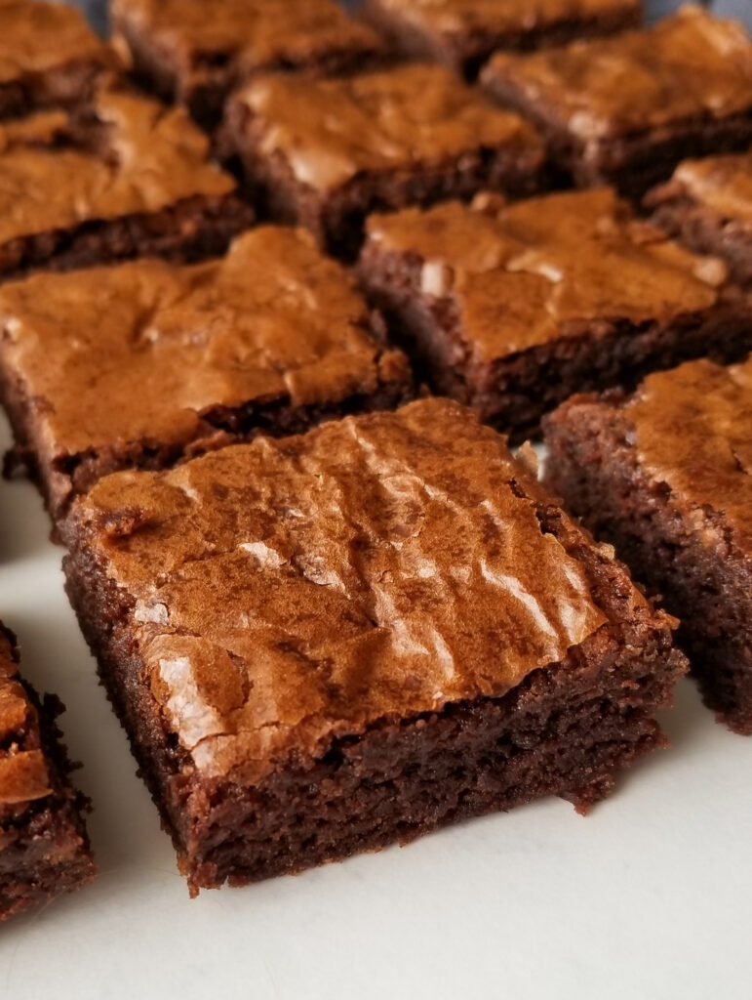

Para essa receita você vai precisar dos seguintes ingredientes:
* 3 ovos grandes * 1 xícara de chá de açúcar (200 gramas) * 2/3 de xícara de chá de manteiga ou margarina (150 gramas) * 1/4 de colher de chá de sal * 1 e 1/3 de xícara de chá de farinha de trigo (160 gramas) * 2 xícaras de chá de achocolatado em pó (280 gramas)
-Modo de preparo:
Aqueça o forno: Preaqueça a 180°C e prepare uma forma pequena untada com manteiga e polvilhada com chocolate em pó. Bata a massa: Em uma tigela, misture bem os ovos, o açúcar e a manteiga derretida com um batedor de arame até formar um creme claro. Adicione os secos: Junte o chocolate em pó, a farinha de trigo e a pitada de sal. Incorpore: Misture tudo delicadamente com uma espátula apenas até a massa ficar homogênea e brilhante, sem bater demais. Asse: Despeje na forma e leve ao forno por cerca de 25 a 30 minutos.
-ingredientes pra massa:
*3 cenouras médias *3 ovos *2 xícaras de açúcar *1 xícara de óleo de canola *2 xícaras de farinha de trigo *1 pitada de sal *1 colher de sopa de fermento em pó
-modo de preparo:
1-No liquidificador, coloque 3 cenouras médias, 3 ovos, 1 xícara de óleo de canola e 2 xícaras de açúcar. Bata até ficar homogêneo. 2-Em uma tigela, coloque 2 xícaras de farinha de trigo, 1 pitada de sal e 1 colher de sopa de fermento em pó. Misture. 3-Em seguida, adicione a mistura do liquidificador na tigela. 4-Com um fouet, misture até ficar homogêneo. 5-Transfira a massa para uma forma untada e enfarinhada. 6-Leve para assar em forno preaquecido a 180 graus Celsius por 40 minutos.
Ingredientes para a cobertura:
*5 colheres de sopa de açúcar *3 colheres de sopa de chocolate em pó *2 colheres de sopa de manteiga *2 colheres de sopa de leite
Modo de preparo:
1-No liquidificador, coloque 3 cenouras médias, 3 ovos, 1 xícara de óleo de canola e 2 xícaras de açúcar. Bata até ficar homogêneo. 2-Em uma tigela, coloque 2 xícaras de farinha de trigo, 1 pitada de sal e 1 colher de sopa de fermento em pó. Misture. 3-Em seguida, adicione a mistura do liquidificador na tigela. 4-Com um fouet, misture até ficar homogêneo. 5-Transfira a massa para uma forma untada e enfarinhada. 6-Leve para assar em forno preaquecido a 180 graus Celsius por 40 minutos.